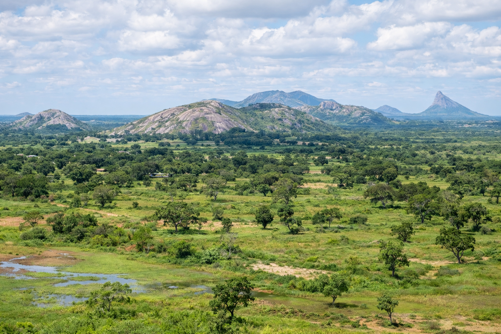

Vilanculos
95k
Archipel de Bazaruto
Dunes de sable blanc et récifs coralliens protégés

RetourLe turquoise infini de l'Océan Indien et l'âme d'un peuple fier
Le Mozambique est une destination de rêve étirée le long d'une côte de 2 500 km. Mariage parfait entre plages de sable blanc poudré, eaux cristallines et patrimoine historique riche, le pays sort des sentiers battus. De la capitale vibrante Maputo aux archipels immaculés de Bazaruto et des Quirimbas, le Mozambique offre une biodiversité marine unique au monde, où les requins-baleines et les raies mantas règnent en maîtres. Un pays où l'hospitalité mozambicaine et les saveurs épicées peri-peri vous laisseront un souvenir indélébile.
Découvrez les 15 joyaux du patrimoine mozambicain
Dunes de sable blanc et récifs coralliens protégés

Ancienne capitale coloniale et patrimoine mondial de l'UNESCO

Un modèle de renaissance écologique et de biodiversité retrouvée

Mecque de la plongée pour les requins-baleines et les raies mantas

Chef-d'œuvre architectural de style Eiffel au cœur de la capitale

Îles isolées et sauvages avec une riche culture Swahili

Point de rencontre privilégié avec les dauphins sauvages

Porte d'entrée vers Bazaruto et spot de kitesurf renommé

Eaux douces cristallines et biodiversité de poissons unique

Où la brousse rencontre l'océan dans un cadre sauvage

Charme colonial portugais et marchés de poissons animés

Temps suspendu entre ruines historiques et artisanat de l'argent
Randonnée sauvage et sommets escarpés à la frontière zimbabwéenne
Deuxième ville du pays, port historique et ambiance portuaire authentique
Expérience culinaire ultime : achetez votre poisson et faites-le griller sur place
Une fusion d'influences latines et d'âme Swahili.
La culture du Mozambique est une mosaïque fascinante née de siècles d'échanges atlantiques et indiens. L'héritage portugais se mêle aux racines africaines pour créer une identité unique, visible dans l'architecture, la langue et une musique envoûtante comme la Marrabenta. L'art Makonde, célèbre pour ses sculptures en bois d'ébène aux formes complexes et spirituelles, est le joyau artistique du pays. Ici, la vie bat au rythme de l'océan et de la joie de vivre mozambicaine.
La musique nationale de Maputo, mélange dynamique de rythmes africains et d'instruments occidentaux.
Sculptures en ébène mondialement connues représentant des "arbres de vie" et des motifs spirituels.
L'héritage des cités-états musulmanes du nord qui commerçaient avec l'Arabie et l'Inde.
Une culture culinaire et sociale unique où le café portugais rencontre le soleil africain.

Ramenez chez vous l'éclat du Mozambique. Des tissus Capulana aux précieuses sculptures Makonde.
 Mode
Mode
Tissu en coton aux motifs vibrants et iconiques, symbole de l'élégance féminine mozambicaine.
 Artisanat
Artisanat
"Ujamaa" (Arbre de vie) sculpté à la main, représentant l'unité et la continuité des générations.
 Gourmet
Gourmet
Les meilleures noix de cajou du monde, grillées artisanalement et relevées au piment Peri-Peri.
Bijou délicat fabriqué par les orfèvres de l'île de Mozambique avec les trésors de l'océan.
Vannerie traditionnelle robuste et esthétique, parfaite pour la décoration.
Affiche d'art de haute qualité des œuvres du célèbre peintre mozambicain Malangatana Valente Ngwenya.

Maputo, Palace Historique

Bazaruto Island, Resort de luxe

Benguerra Island, Villa de plage

Ponta Mamoli, Design chic

Quirimbas, Patrimoine colonial

Maputo, Vue sur la baie
La cuisine mozambicaine est une explosion de saveurs où les produits frais de l'océan rencontrent l'huile de palme et le piment Peri-Peri.
Le plat iconique : des crevettes géantes marinées au piment, à l'ail et au citron, puis grillées.
Feuilles de manioc pilées cuites dans du lait de coco avec des arachides et parfois des crevettes.
Poulet mariné au lait de coco frais puis grillé au charbon de bois.
Crabes frais cuisinés dans une sauce épicée à la noix de coco.
Poisson du jour mijoté dans un lait de coco parfumé aux épices Swahili.
Bouillie de farine de maïs, base essentielle de tous les repas mozambicains.
Petits pains cuits au four à bois, héritage portugais, meilleurs quand ils sont chauds.
Beignets de haricots frits, épicés et croustillants, collation populaire.
Plat de riz cuit avec des haricots et du lait de coco, spécialité du nord.
Dessert rafraîchissant fait à partir de lait de coco frais pressé.
Homards, langoustes et calamars grillés, servis sur la plage.
Thé noir de haute qualité produit dans les montagnes du nord du pays.
Vibrez au son du Mozambique à travers ses festivals de musique et de danse légendaires.
Le plus grand festival de musique internationale et contemporaine de Maputo (Mai).
Célébration du rythme national dans les rues de la capitale et à Marracuene (Février).
Événement annuel à Tofo célébrant la migration des baleines à bosse (Septembre).
C'est le meilleur moment pour visiter. Les températures sont agréables, le ciel est bleu et l'humidité est faible. Idéal pour la plage et le safari.
Il fait chaud et humide avec des averses tropicales souvent intenses. C'est cependant la meilleure période pour observer les requins-baleines et les tortues imbriquées.
Le sud du pays est sûr. Prudence recommandée dans certaines zones du nord (Cabo Delgado). Suivez les conseils officiels.
Zone à haut risque. Prophylaxie antipaludique impérative. Utilisez des moustiquaires et des répulsifs surtout le soir.
Exemption de visa pour de nombreux pays pour le tourisme (30 jours). Vérifiez les dernières régulations en ligne (e-Visa).
Metical (MZN). Le Rand sud-africain et le Dollar US sont acceptés dans les zones touristiques du sud.
Expert Culturel & Maputo
Ricardo est un amoureux de l'architecture et de l'histoire de Maputo. Il vous fera découvrir les secrets de la capitale et ses meilleurs jazz bars.
Experte Marine & Plongée
Biologiste marine passionnée, Ana vous guidera dans les eaux de Bazaruto pour une rencontre éthique avec les dugongs et les baleines.
Guide Historique (Île de Moz)
Natif de l'Île de Mozambique, Luis connaît chaque pierre et chaque légende de cette cité historique fascinante.